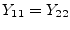

| (9.103) | ||
| (9.104) |
A phase shifter alters the phase of the input signal independently on the frequency. As a result the relation between input and output signal is complex. To get the DC model, some simulators use the AC formulas and create the real part or the magnitude. This procedure has no physical reason, because it uses an operation that is not defined for DC. But one can think in the following direction: As a DC quantity is constant, it doesn't change if it is phase-shifted. (An AC quantity doesn't change its magnitude, too.) Or to say it with other words, for a DC simulation the phase to shift is always zero. That leads to the result that the phase shifter is a short circuit for DC. So, this is true for all reference impedances.
For an AC simulation, the Z-parameters of a phase shifter writes as follows.
| (9.103) | ||
| (9.104) |
The admittance parameters required for the AC analysis result in
|  | (9.105) | |
| (9.106) |
where denotes the actual phase shift of the device. For a zero
phase shift ( ) neither the Z- nor the Y-parameters are
defined. That is why during AC analysis a phase shifter with zero
phase shift represents an ideal short circuit regardless its reference
impedance.
) neither the Z- nor the Y-parameters are
defined. That is why during AC analysis a phase shifter with zero
phase shift represents an ideal short circuit regardless its reference
impedance.
The MNA matrix entries of an ideal short circuit during AC and DC analysis correspond to a voltage source with zero voltage. The complete MNA matrix representation writes as follows
| (9.107) |
whence denote the branch current through the voltage source.
The scattering parameters of an ideal phase shifter with phase shift and reference impedance writes as follows.
| (9.108) |
| (9.109) |
| (9.110) |
An ideal phase shifter is noise free.